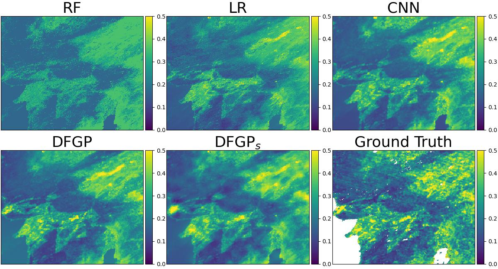

Deep Feature Gaussian Processes for Single-Scene Aerosol Optical Depth Reconstruction
Shengjie Liu (University of Southern California), Lu Zhang (University of Southern California)
Data and Code for the published paper in IEEE Geoscience and Remote Sensing Letters: https://doi.org/10.1109/LGRS.2024.3398689
This is a GitHub repo at https://github.com/skrisliu/dfgp

Key Packages
pytorch==2.0.1 gpytorch==1.11
Tested on Python 3.9, Ubuntu 18.04.6 LTS, with 1080 Ti 11GB GPU. Running on CPU is possible but significantly slow.
This repo includes the MODIS-LA data, with trained CNN network and deep features. For the EMIT-BJ data, download at Google Drive.
Demo on MODIS-LA
data/modis/im.npy # features, 240*300*13, the last two dimensions are xy coordinates data/modis/aod.npy # label, 240*300 data/modis/trainmask.npy # train mask, 240*300 data/modis/testmask.npy # test mask, 240*300 data/modis/fea64.npy # deep features, 240*300*64 data/modis/cnn.pt # trained CNN model
Data required to run the MODIS-LA demo are included in this repo.
DFGP
Python demo12_modis_dfgp.py
DFGPs
Python demo12_modis_dfgps.py
Baseline Methods
CNN
Python demo11_modis_cnn.py
Require networks.py and rscls.py to clip the image and load network